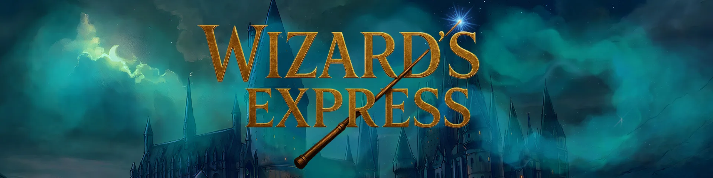

Bienvenue sur Wizard’s Express !
Embarquez à bord du Wizard’s Express et plongez dans un univers magique unique, inspiré de l’œuvre de J.K. Rowling et enrichi par une communauté passionnée.
Notre serveur RP vous propose de vivre une aventure en 2010, bien après la chute de Voldemort, dans un monde sorcier qui se reconstruit et évolue.
Ici, vous incarnerez votre propre personnage : élève de Poudlard, professeur, Auror, mage noir… Chaque choix façonnera votre destin et influencera l’histoire collective. À Poudlard, vous suivrez des cours de magie, apprendrez vos premiers sortilèges et vivrez la vie d’un élève de sorcellerie. Mais au-delà des murs du château, le monde magique continue de vibrer, avec ses conflits, ses secrets et ses dangers.
Wizard’s Express, c’est :
- Un univers immersif et fidèle à l’ambiance de Harry Potter.
- Un RP sérieux où les actes ont des conséquences.
- Une communauté respectueuse et créative.
- Une expérience magique où chaque joueur devient acteur de l’histoire.